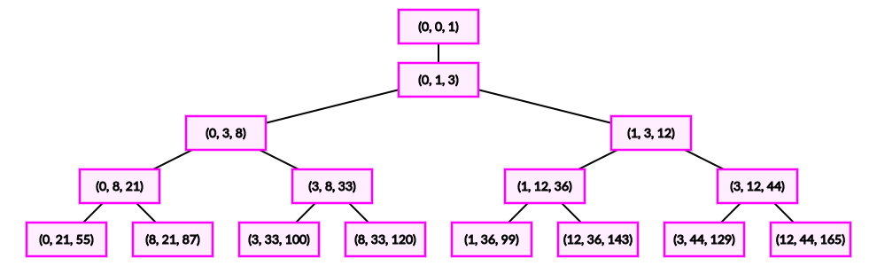

给定整数 $k > 1$，你需要求出 $n$ 个正整数三元组 $\left( a_i, b_i, c_i \right)$，满足：
可以证明，方程 $x^2 + y^2 + z^2 = k \left( x y + y z + z x \right) + 1$ 有无穷多组解满足所有的 $x_i, y_i, z_i$ 互不相同。
共一行，包含两个正整数 $k, n$ ($2 \leq k \leq 1000; 1 \leq n \leq 1000$)。
输出 $n$ 行，每行三个整数 $a_i, b_i, c_i$，描述一个三元组。
这是一道关于不定方程的经典题。这道题的主角就是不定方程 $$ x^2 + y^2 + z^2 = k \left( x y + y z + z x \right) + 1 \tag 1 \label 1 $$
还记得 Fermat 是如何证明 $x^4 + y^4 = z^2$ 无正整数解的？对，就是无穷递降法。无穷递降法是证明不定方程无解的一个有力工具。
事实上，对于一些有解的不定方程，也可以用这种类似的无穷递降法，将其 "递降" 到一个基本解 (平凡解)，反推回去即可生成所有的解。
考虑 $\left( x_0, y_0, z_0 \right)$ 是 $\eqref 1$ 式的一组解，我们将其看成关于 $x$ 的一元二次方程，则有 $$ x^2 - k \left( y_0 + z_0 \right) x + \left( y_0^2 + z_0^2 - k y_0 z_0 - 1 \right) = 0 \tag 2 \label 2 $$
由 Vieta 定理知 $x_1 = k \left( y_0 + z_0 \right) - x_0$ 也是一元二次方程 $\eqref 2$ 的根。
因此 $\left( x_1, y_0, z_0 \right)$ 也是不定方程 $\eqref 1$ 的解。
如果我们能得到 $x_1 < x_0$，那么我们就可以对这组解进行 "递降" 了。
设 $x_0 \geq y_0 \geq z_0$。记二次函数 $f \left( x \right) = x^2 - k \left( y_0 + z_0 \right) x + \left( y_0^2 + z_0^2 - k y_0 z_0 - 1 \right)$。
则 $f \left( y_0 \right) = - z \left( y - z \right) - \left( k - 2 \right) y^2 - \left( 2 k - 1 \right) y z - 1 < 0$。
而 $f \left( x \right)$ 的对称轴 $\dfrac k2 \left( y_0 + z_0 \right) \geq y_0 + z_0 \geq y_0$，因此 $f \left( x \right)$ 的两根分别落在 $y_0$ 的两侧，从而 $x_1 < x_0$。
于是所有的解都可以被递降到若干组基本解，因此我们只需找一些基本解即可生成所有的解了。
(ps: 但在这道题中基本解可以有多个，如 $k = 3$ 时的 $\left( -1, 6, 6 \right)$ 可以生成 $\left( 6, 6, 37 \right)$ 等)
那么，一个显然的可以看出来的解就是 $\left( 0, 0, 1 \right)$ 了。因此我们尝试从 $\left( 0, 0, 1 \right)$ 出发去生成一簇 (无穷多个) 解。
考虑现在有一组解 $\left( x, y, z \right)$，不妨设 $0 \leq x \leq y < z$。
由之前的结论已经证明，解 $\left( x, y, k \left( x + y \right) - z \right)$ 是比这组解要小的 (指 $x + y + z$)。
而它还能生成两组解，$\left( x, z, k \left( x + z \right) - y \right)$ 和 $\left( y, z, k \left( y + z \right) - x \right)$。由 $k \left( x + z \right) - y \geq 2 z - y = z + \left( z - y \right) > z$ 知 $\left( x, z, k \left( x + z \right) - y \right)$ 满足 $0 \leq x \leq z < k \left( x + z \right) - y$。
同理，$\left( y, z, k \left( y + z \right) - x \right)$ 也是一个严格大于 $\left( x, y, z \right)$ 的解。
也就是说，对于一个正整数解，它一定可以生成两个比它 "大" 的解和一个比它 "小" 的解。于是这些解构成了一个树状结构，从而生成的解一定是互不相同的。如下图所示 ($k = 3$)：
很显然，由上述过程知，存在最小数任意大的解，于是我们证明了题目中所给的结论 (方程 $x^2 + y^2 + z^2 = k \left( x y + y z + z x \right) + 1$ 有无穷多组解满足所有的 $x_i, y_i, z_i$ 互不相同)。
经过实践可知，在使用宽度优先搜索 (bfs) 情况下，当 $k = 1000$ 时所搜得的最大解不超过 $10^{40}$，因此是可以接受的 (可惜不能使用 ，如果使用优先队列代替队列可能可以获得更小的最大值。__int128 要手写高精度)
k, lim = map(int, input().split())
used, Q = {0}, [(0, 1, k)]
h = 0
while True:
a, b, c = Q[h]
h += 1
if not (a in used or b in used or c in used):
used.update({a, b, c})
print(a, b, c)
lim -= 1
if lim == 0:
exit(0)
Q.append((a, c, k * (a + c) - b))
Q.append((b, c, k * (b + c) - a))
#include "decimal.h"
#include <bits/stdc++.h>
using std::cin;
using std::cout;
typedef std::tuple <Decimal, Decimal, Decimal> tuple;
int k, lim;
tuple que[2333333];
std::set <Decimal> used;
int main() {
int h, t = 1; Decimal a, b, c;
std::ios::sync_with_stdio(false), cin.tie(NULL);
cin >> k >> lim, used.emplace(0), *que = tuple(0, 1, k);
for (h = 0; ; ++h) {
std::tie(a, b, c) = que[h], assert(a < b && b < c);
if (!(used.count(a) || used.count(b) || used.count(c))) {
used.emplace(a), used.emplace(b), used.emplace(c),
cout << a << ' ' << b << ' ' << c << '\n';
if (!--lim) return 0;
}
que[t++] = tuple(a, c, k * (a + c) - b),
que[t++] = tuple(b, c, k * (b + c) - a);
}
return -1;
}
坑1：在 bfs 的时候只需要将两个比原来解 "大" 的解加入队列 (即只添加子节点不添加父节点)。
坑2：可以用 Hash 判断一个数是否出现，提高效率。